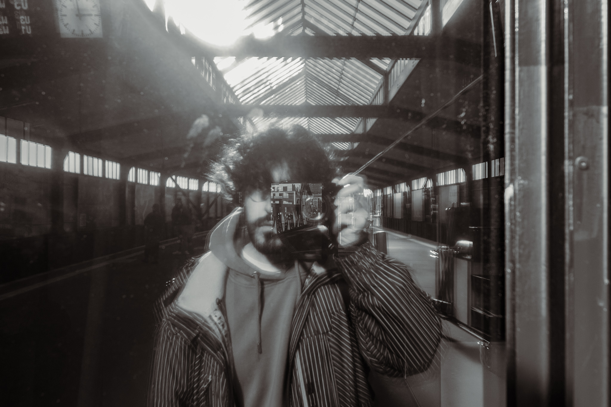

About

Nikos Kanistras was born in the city of Patras in 1996. In 2020 graduated from the city's University with a masters degree in Materials Science and moved to Germany to finish his Doctoral Studies. His interest in street photography began during his undergraduate studies, when he found himself captivated by the people and architecture around him. His photographic style is rooted in documentary photography, capturing candid moments and everyday scenes that reveal the character of a place and its people. Through his lens, Nikos seeks to capture the beauty and complexity of urban life.
Contact: nikoskanistras@protonmail.com